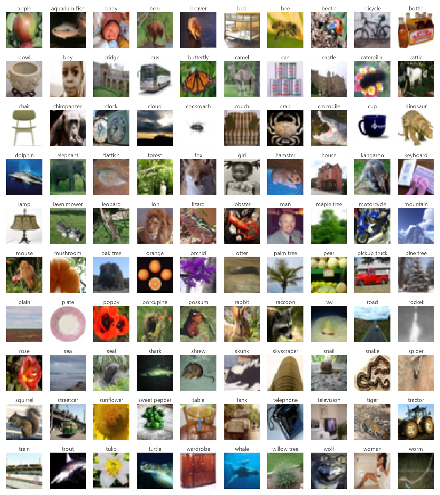
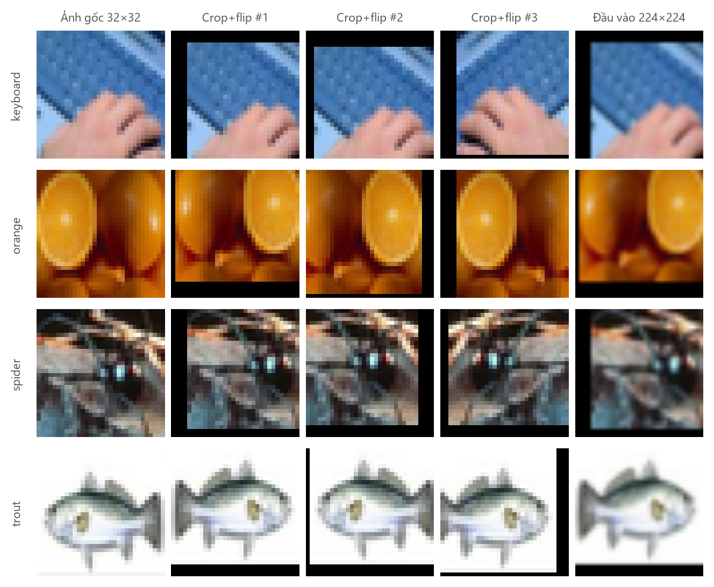
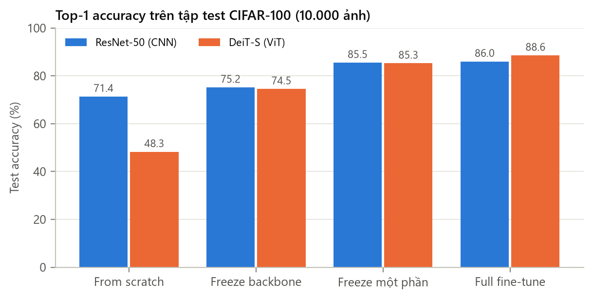
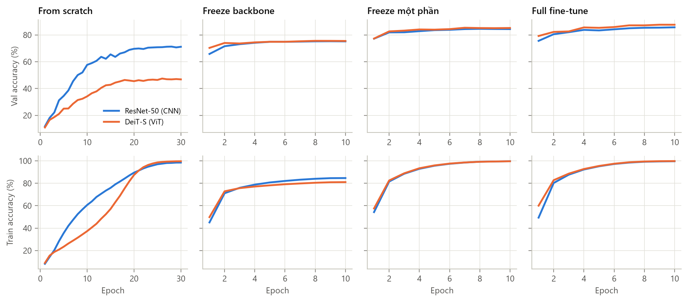
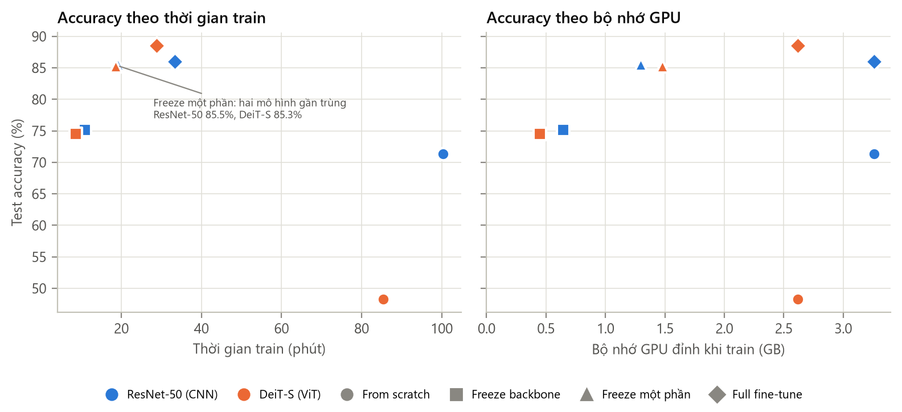
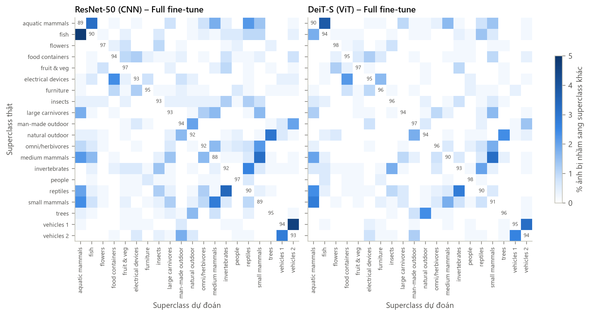
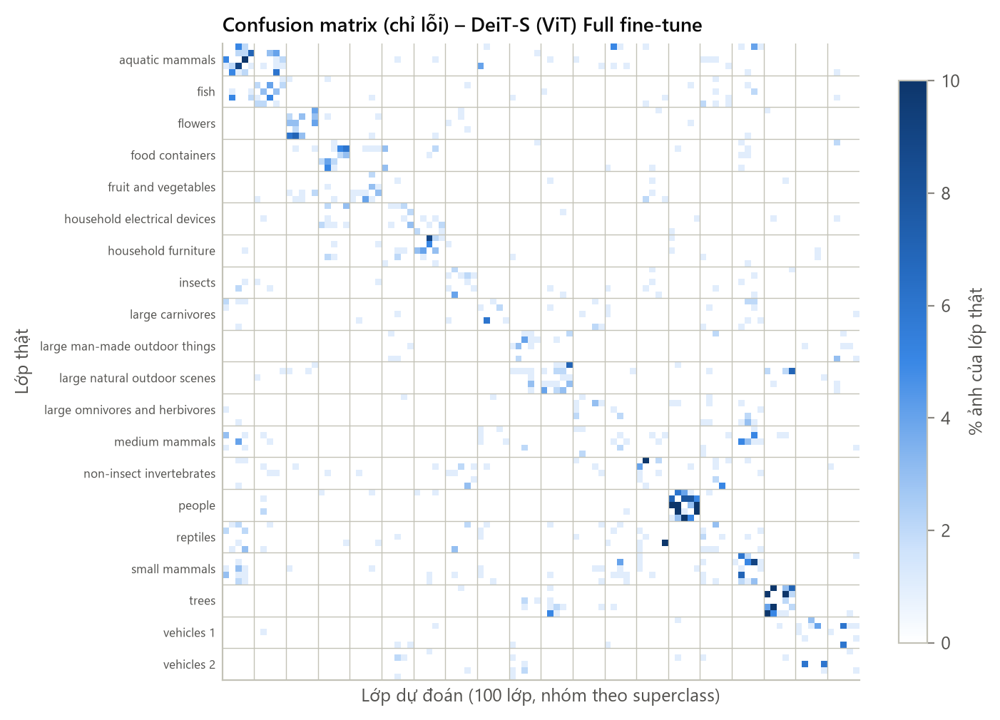
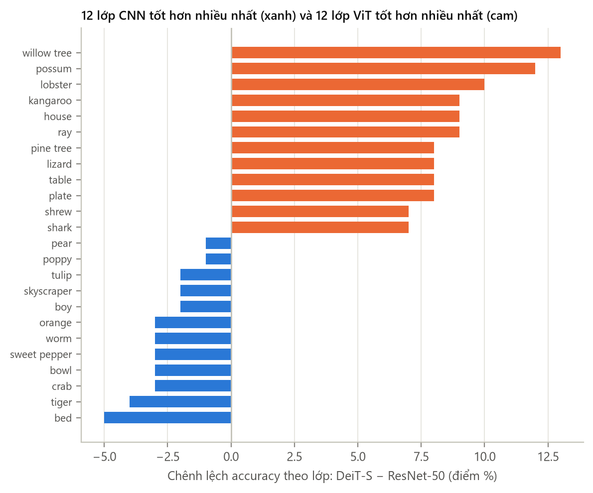
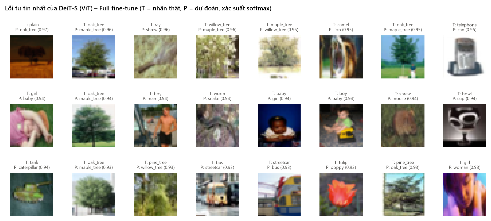

CO5085 · Học sâu và ứng dụng trong thị giác máy tính · HK261 (2026–2027)
A1 — CNN vs Transformer trên CIFAR-100
Học viên thực hiện: Trần Hoài Tâm · MSHV 2470743 (làm cá nhân) · Giảng viên: Lê Thành Sách, Nguyễn Quốc Minh
Dataset
CIFAR-100
100 lớp · 20 superclass · 45k train / 5k val / 10k test
CNN
ResNet-50
resnet50.tv2_in1k · 23,7M tham số · 4,1 GMACs
Transformer
DeiT-S (ViT-S/16)
deit_small_patch16_224.fb_in1k · 21,7M · 4,6 GMACs
Kết quả chính
Tốt nhất · DeiT-S full fine-tune
88,57%
top-1 test · hơn ResNet-50 full fine-tune 2,56 điểm (McNemar p < 0,001)
ResNet-50 full fine-tune
86,01%
freeze một phần chỉ kém 0,48 điểm nhưng nhanh hơn 43%, ít bộ nhớ hơn 60%
ViT from scratch
48,26%
thấp hơn CNN from scratch 23 điểm; pretraining tăng 40 điểm cho DeiT-S, 15 điểm cho ResNet-50
Ensemble CNN + ViT
89,67%
trung bình softmax hai mô hình full fine-tune, không huấn luyện thêm
1. Dataset và EDA
CIFAR-100 (Krizhevsky, 2009) có 60.000 ảnh màu 32×32, 100 lớp cân bằng (500 train + 100 test mỗi lớp), gom thành 20 superclass × 5 lớp. Dữ liệu được tải từ mirror chính thức uoft-cs/cifar100 trên Hugging Face. Tác giả không công bố license chính thức; tập này công khai cho nghiên cứu và giảng dạy. Chọn CIFAR-100 vì có trong danh sách gợi ý của đề, khó hơn CIFAR-10 nhiều (nhiều lớp gần nhau trong cùng superclass), và ảnh 32×32 khác xa ImageNet nên khác biệt giữa freeze và fine-tune hiện rõ.
- Split: 45.000 train / 5.000 validation (tách phân tầng 50 ảnh/lớp, seed 0, từ tập train chính thức) / 10.000 test chính thức, chỉ dùng một lần để đánh giá checkpoint đã chọn theo validation.
- Cân bằng lớp: 450 / 50 / 100 ảnh mỗi lớp, nên accuracy ≈ macro-F1.
- Thống kê pixel (train): mean (0,507, 0,487, 0,441), std (0,267, 0,256, 0,276).

2. DataLoader và augmentation
Toàn bộ dataset (~180 MB uint8) được nạp lên GPU một lần; mỗi batch được augment, resize và chuẩn hoá ngay trên GPU (src/data.py), tránh nút thắt DataLoader đa tiến trình trên Windows. Pipeline giống hệt cho cả 8 cấu hình:
- Train: random crop 32×32 (zero-pad 4) và lật ngang ngẫu nhiên, độc lập từng ảnh.
- Resize bilinear lên 224×224, đúng độ phân giải pretrain của cả hai backbone (DeiT-S: 196 patch token).
- Chuẩn hoá mean/std ImageNet. Val/test: chỉ resize và chuẩn hoá.

3. Protocol thí nghiệm
| Chế độ | Khởi tạo | Phần đóng băng (ResNet-50 / DeiT-S) | Epoch | LR backbone / head |
|---|---|---|---|---|
| From scratch | Ngẫu nhiên | – | 30 | 5e-4 / 5e-4 |
| Freeze backbone | ImageNet-1k | tất cả trừ head | 10 | – / 1e-3 |
| Freeze một phần | ImageNet-1k | stem + layer1–2 / patch-embed + block 0–5 | 10 | 1e-4 / 1e-3 |
| Full fine-tune | ImageNet-1k | – | 10 | 1e-4 / 1e-3 |
Chung: AdamW, weight decay 0,05, batch 64, cosine + warmup, label smoothing 0,1, gradient clipping 1,0, bfloat16, seed 42. Chọn checkpoint có val accuracy cao nhất rồi đánh giá test một lần. Phần cứng: RTX 3050 Laptop 6 GB.
4. Kết quả so sánh
| Model | Chế độ | Top-1 (%) | Top-5 (%) | Macro-F1 (%) | Trainable (M) | Train (phút) | Mem (GB) |
|---|---|---|---|---|---|---|---|
| ResNet-50 (CNN) | From scratch | 71,37 | 90,48 | 71,27 | 23,71 | 100,4 | 3,26 |
| DeiT-S (ViT) | From scratch | 48,26 | 71,55 | 47,76 | 21,70 | 85,5 | 2,62 |
| ResNet-50 (CNN) | Freeze backbone | 75,19 | 94,62 | 75,17 | 0,20 | 10,9 | 0,64 |
| DeiT-S (ViT) | Freeze backbone | 74,52 | 94,28 | 74,51 | 0,04 | 8,6 | 0,45 |
| ResNet-50 (CNN) | Freeze một phần | 85,53 | 97,15 | 85,53 | 22,27 | 19,1 | 1,29 |
| DeiT-S (ViT) | Freeze một phần | 85,26 | 96,92 | 85,22 | 10,69 | 18,6 | 1,48 |
| ResNet-50 (CNN) | Full fine-tune | 86,01 | 97,66 | 86,03 | 23,71 | 33,4 | 3,26 |
| DeiT-S (ViT) | Full fine-tune | 88,57 | 97,94 | 88,60 | 21,70 | 28,8 | 2,62 |
Test 10.000 ảnh; in đậm: chế độ tốt nhất của mỗi họ. Thời gian/bộ nhớ đo trên RTX 3050 Laptop 6 GB, batch 64, 224×224.



Kiểm định McNemar trên cùng 10.000 ảnh test: chênh lệch ResNet-50 – DeiT-S có ý nghĩa ở from scratch và full fine-tune (p < 0,001), nhưng không có ý nghĩa ở freeze backbone (p = 0,13) và freeze một phần (p = 0,46).
Phân tích lỗi
- Lỗi "hợp lý": 51,5% lỗi của DeiT-S và 48,1% lỗi của ResNet-50 (full fine-tune) là nhầm sang lớp anh em trong cùng superclass (ngẫu nhiên chỉ là 4%). Tỉ lệ này tăng theo chất lượng mô hình: DeiT-S from scratch chỉ 22,6%.
- Cặp khó nhất: maple ↔ oak tree, nhóm people (girl là lớp khó nhất, 63%), otter ↔ seal. Ở 32×32, hình dạng lá hay khuôn mặt gần như mất hết.
- Nhãn mơ hồ: nhiều lỗi tự tin nhất thực ra là ảnh có nhiều đối tượng hoặc nhãn khó phân định (ảnh "plain" có cây lớn, "girl"/"boy" là trẻ nhỏ bị đoán baby).
- CNN vs ViT: DeiT-S thắng với cách biệt lớn ở các lớp cần hình dạng tổng thể (willow tree +13, possum +12, lobster +10 điểm); ResNet-50 thắng tối đa 5 điểm, ở một số lớp có kết cấu/màu sắc đặc trưng (tiger, orange). Hai họ chỉ cùng sai 7,3% ảnh, nên ensemble đạt 89,67%.




5. Thảo luận
Pretrained so với from scratch
Với 45.000 ảnh, cả hai mô hình from scratch đều overfit nặng: train accuracy 98–99,7% nhưng val chỉ 71% (ResNet-50) và 47% (DeiT-S). Pretraining trên ImageNet-1k tăng 14,6 điểm cho ResNet-50 và 40,3 điểm cho DeiT-S, với chỉ một phần ba số epoch. Chỉ một lớp tuyến tính trên đặc trưng DeiT-S đóng băng (0,04M tham số, 8,6 phút) đã đạt 74,52%, hơn ResNet-50 from scratch train 100 phút.
Khi nào ViT cần pretraining?
Trong thí nghiệm này: luôn cần. Từ epoch 18, val accuracy của DeiT-S from scratch đứng yên ở 46–47% trong khi train accuracy tăng lên 99,7%; mô hình học thuộc chứ không thiếu epoch. ViT không có inductive bias cục bộ/tịnh tiến như convolution nên cần rất nhiều dữ liệu, hoặc augmentation và regularization mạnh cùng lịch huấn luyện dài (như DeiT). Khi đã pretrain trên cùng ImageNet-1k, DeiT-S lại vượt ResNet-50 2,56 điểm.
Khi nào đóng băng có lợi?
- Freeze backbone: nhanh hơn ~3 lần, ít bộ nhớ hơn 5 lần, nhưng kém full fine-tune 11–14 điểm do domain gap (ảnh 32×32 phóng to khác xa ImageNet). Mô hình underfit (train ≈ val), nên chỉ hợp khi tài nguyên rất hạn chế hoặc nhiều tác vụ dùng chung backbone.
- Freeze một phần: điểm cân bằng tốt nhất cho ResNet-50 (−0,48 điểm, −43% thời gian, −60% bộ nhớ) vì các stage đầu của CNN học đặc trưng chung, dễ chuyển giao. Với DeiT-S thì kém 3,3 điểm: patch embedding và 6 block đầu bị đóng băng không thích nghi được với patch mờ.
- Full fine-tune: luôn tốt nhất, và vẫn vừa GPU 6 GB (tối đa 3,26 GB).
Chi phí
Trên RTX 3050 Laptop, DeiT-S full fine-tune vừa chính xác hơn vừa rẻ hơn ResNet-50: train 261 so với 225 ảnh/s, suy luận 897 so với 705 ảnh/s, bộ nhớ 2,62 so với 3,26 GB, dù GMACs cao hơn một chút.
Hạn chế
Mỗi cấu hình chạy một seed. Công thức from scratch đơn giản (30 epoch, crop + flip), nên kết quả from scratch, nhất là của ViT, là cận dưới. Siêu tham số dùng chung cho hai họ, không tinh chỉnh riêng. Chi tiết trong báo cáo PDF (Mục 6–8).
Tái lập
pip install -r requirements.txt --extra-index-url https://download.pytorch.org/whl/cu124
python -m src.eda
python -m scripts.run_all
python -m src.analyze
python -m scripts.build_report